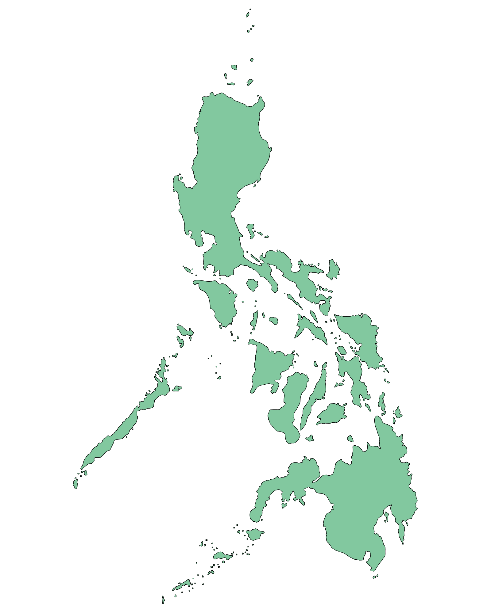

Click any pin on the map
to explore a heritage site

Well Preserved
Laguna, Luzon
Rizal Shrine, Calamba
The ancestral home and birthplace of José Rizal. Reconstructed national shrine with original family furniture and artifacts.
Explore this Site →
Well Preserved
Intramuros, Manila, Luzon
Fort Santiago
Spanish colonial citadel where Rizal spent his final days. Bronze footprints trace his last walk to Bagumbayan.
Explore this Site →
Well Preserved
Ermita, Manila, Luzon
Rizal Monument, Luneta
UNESCO-recognized monument at the exact site of Rizal's execution. His remains are interred beneath the bronze statue.
Explore this Site →
Well Preserved
Dapitan, Zamboanga del Norte, Mindanao
Rizal Shrine, Dapitan
Rizal's actual home during 4 years of exile. He built the house himself. School, hospital, and water system grounds are intact.
Explore this Site → Luzon heritage sites
Manila cluster
Mindanao heritage sites